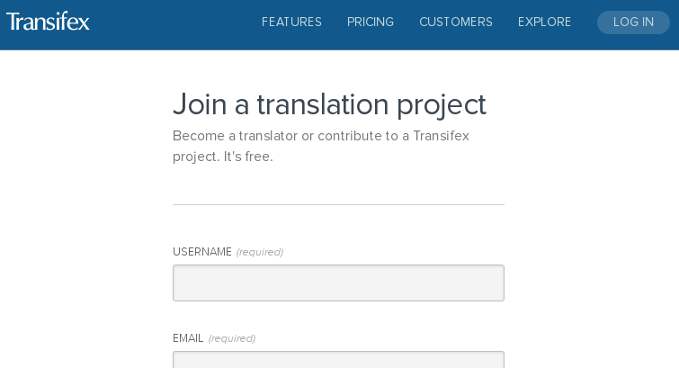
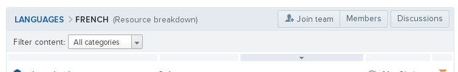
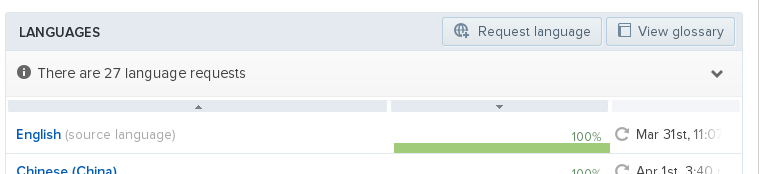
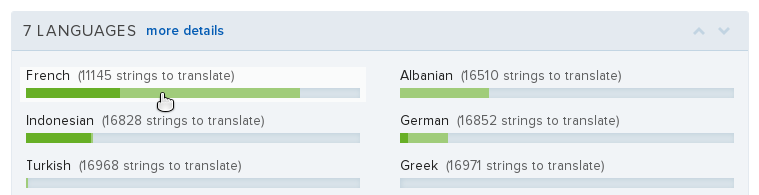
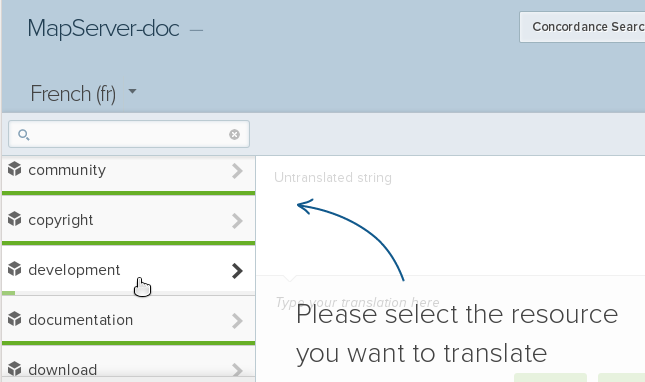
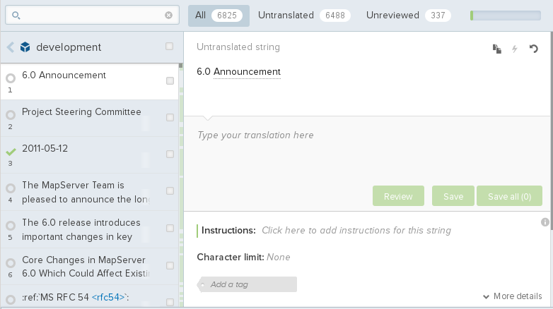

How to Help Translate the Documentation¶
- Author:
Yves Jacolin
- Contact:
yjacolin at free dot fr
- Last Updated:
2014-04-16
Introduction¶
This chapter aims to explain how to help translating the documentation into another language than English. Some languages are already enabled for translating and some are not. Pleas see Request a new language if needed.
This chapter is still being written. Please forgive any errors you find here and please report them to the mapserv-dev list with a [doc] flag in the subject.
The translation process has several steps:
create a language in Transifex
add the new language into the source repository
add new translator to the language group in Transifex
translate each chapter
pull each translated files into the language dir from Transifex
and push them into doc repository
build the documentation
This chapter describes how to add a new language, how to join a language group, and how to translate the documentation.
What is Transifex for?¶
Transifex is a croudsourcing translation web application. It allows projects to let people easily translate documentation, websites, and applications.
It offers a graphic interface for those of you who don’t like command line but also some features for those who love them.
Transifex helps the translator to improve their translation with suggestions, glossary and proofreading process.
Starting with Transifex¶
Subscribe to Transifex¶
You need a Transifex account before translating. Go to Open Source Transifex account page and create a new account.

If not already done, please login ;)
Find the project¶
There are several OSGeo projects hosted on Transifex, here are some of them:
You can find more in the Transifex website.
Each project has a news page to send some information to you, so please, take some time to read them. You can also send some messages to others to discuss on a topic.
Ask to join a translator group¶
Click on the link to access the dashboard of the MapServer project in Transifex (link above), then the language you want to join and finally find the button Join team. You should now wait for the manager accept you in the group (given them time to read your request, some of them could not have so much time).

Welcome to the translation team!
Request a new language¶
For the MapServer project, asking a new language will add a new language group on Transifex and some stuff in the documentation repository. Don’t need to ask on the mapserv-dev list (but we will be happy to receive some message or feedback from you).
Go to the MapServer dashboard on Transifex (see link above) and click on ‘Request language’:

Creating a new language by the manager should not be too long, actually as long as to accept you in the team.
Translation Process¶
Describing the translation process could be an awesome task, so we are just going to describe the short way and we let you discover all the features in Transifex.
Choose a file and translate¶
You are now formally a translator of the MapServer project on Transifex. So you should go to the dashboard of the project, choose your language:

Then select a file in the new interface:

The new interface allow you to choose a string to translate - the toolbar allow you to filter untranslated or Unreviewed string:

Click on the string on the left, translate it where ‘Type your translation here’ appears in the screenshot above. When finished clic on Save. Suggestion or glossary appear sometime on the right panel to help you.
In the untranslating string field, you have several tools:
Duplicate : copy paste the english string into the translated file (sometimes used to let the translator easily duplicate identical strings).
Machine translation : never used, so I can’t help on this ;)
Revert : revert your translated string.
You have some keyboard shortcuts:
Tab : switch to new string and save your modification
Alt-Shif D : review the string and go to the next string
Click on the Shortcut button to the right to find much more keyboard shortcuts.
Proof reading¶
Proof reading is similar to the translation process, except that you should be a reviewer to do it and you should click on the Review button instead of the save button.
Please don’t review the string you translated or wait for some time before to be sure that you don’t miss some errors.
Other features¶
Glossary¶
Suggestion¶
FAQ¶
Why don’t I see my translation into the MapServer website?¶
We need to push your translation into the doc repository then build again the documentation. This is not an automatic task so there is some delay between your file editing and the time where you can see them in the website.
You can send an email to the mapserver-dev list to ask for someone to do the pull/push process for the translation.